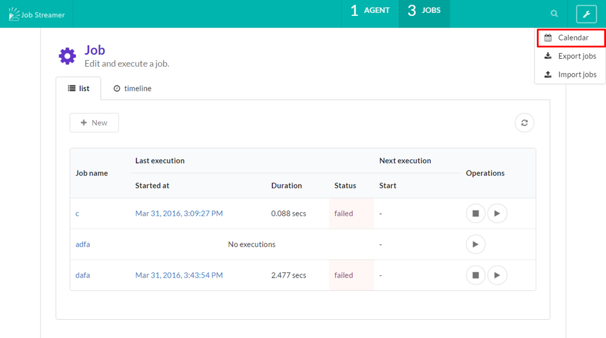
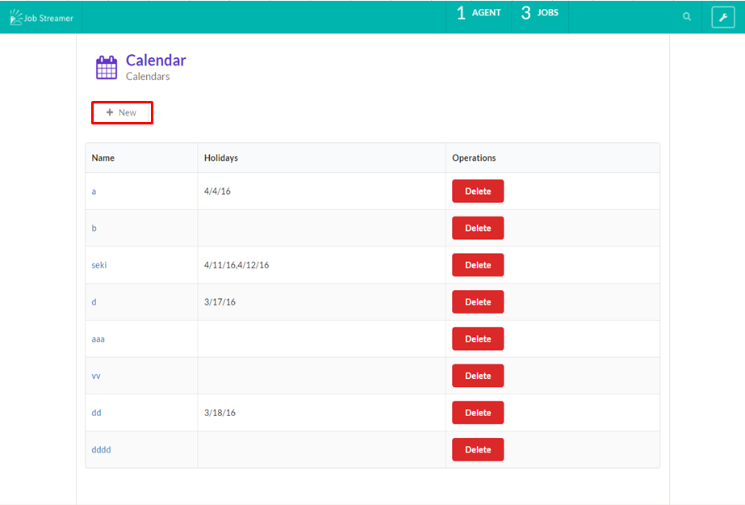
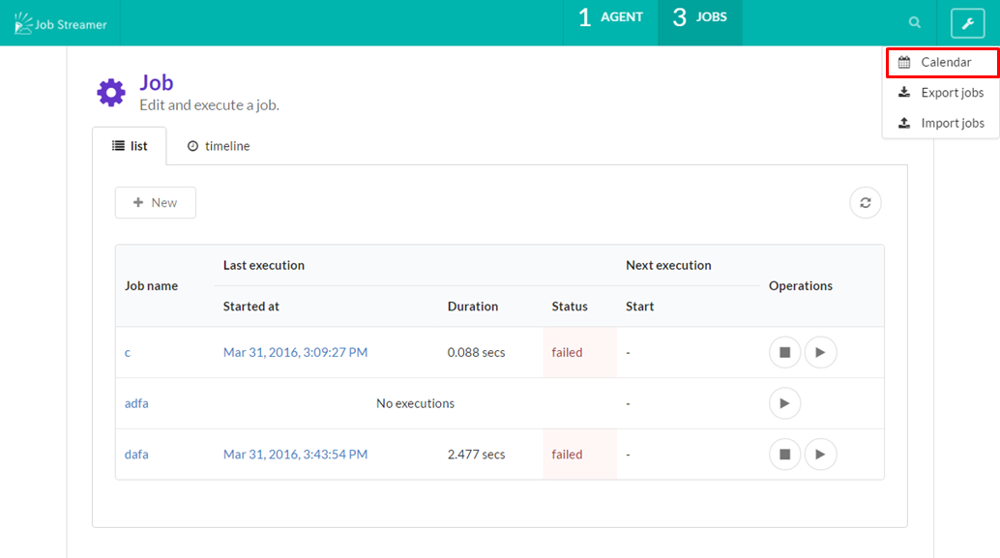
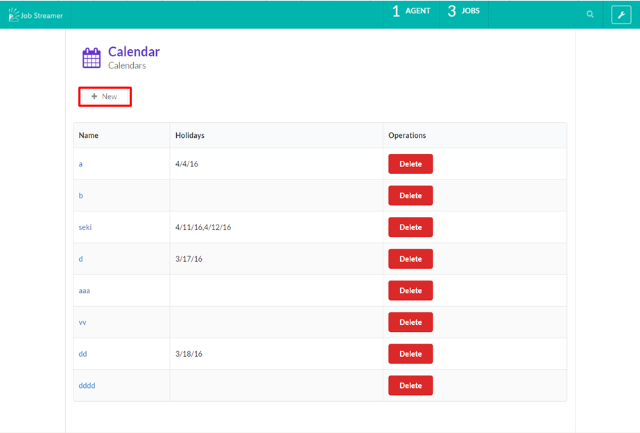

ジョブのスケジューリング
スケジュールで自動実行する
cron expressions形式でスケジュールを登録することで、ジョブを自動実行できます。

カレンダーの登録方法
1.トップページから右側メニューのプルダウン選択によりカレンダーに移動

2.newボタン押下

3.カレンダーを作成
カレンダーを設定して休日はジョブの実行を抑止する
cron expressionsとともにカレンダーも設定することでカレンダーに休日として登録されている日はジョブの実行を抑止することができます。
cron expressions形式でスケジュールを登録することで、ジョブを自動実行できます。
1.トップページから右側メニューのプルダウン選択によりカレンダーに移動

2.newボタン押下

3.カレンダーを作成
cron expressionsとともにカレンダーも設定することでカレンダーに休日として登録されている日はジョブの実行を抑止することができます。